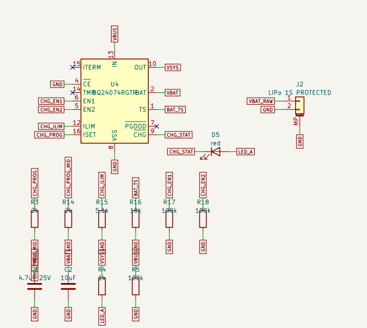
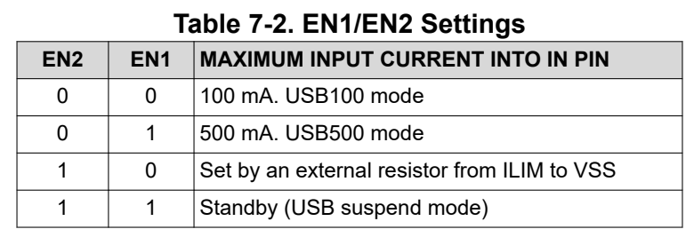
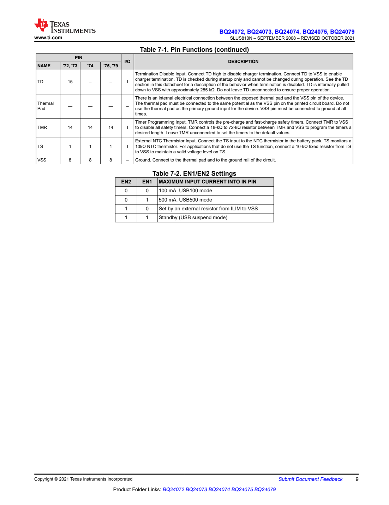

Your schematic

Original exported schematic; some labels overlap. The connection transcription below comes from the schematic generator. Equal net labels connect even when no wire is drawn between them.
| Reference / net | Connection |
|---|
| U4 IN / OUT / BAT | VBUS / VSYS / VBAT |
| R3 + R14 | ISET → 2 kΩ → CHG_PROG_MID → 2 kΩ → GND |
| R15 | ILIM → 5.1 kΩ → GND |
| R17 / R18 | EN1 / EN2 → 100 kΩ each → GND |
| MCU GPIO6 / GPIO7 | Drive EN1 / EN2 respectively |
| CE / TS | CE grounded; TS → R16 10 kΩ → GND |
| R23 (outside crop) | J2 VBAT_RAW → 0 Ω → VBAT |
TI datasheet · BQ24074
Official datasheet, page 9 · Saved copy
Table 7-2 lists EN2 before EN1. Our GPIO mapping is GPIO6 → EN1, GPIO7 → EN2.

Read for this round
- Page 9: mode selection.
- Pages 21–24: input current sharing and battery supplement.
- Page 25, Equation 2: charge-current programming.
- Page 12: K_ISET, nominal 890 AΩ.
For question 3, use a deliberately simplified load measured at VSYS. Ignore charger quiescent current and transient details initially; we will include converter losses and dynamic response in the regulator review.
Inspect a full datasheet page

Your first three checks
- Reset: With GPIO6/7 high impedance, what are EN1 and EN2, and which input-current mode is selected? Does R15 set the input limit in this state?
- Charge target: What is the total resistance from ISET to ground, and what nominal fast-charge current does Equation 2 give? Is that current guaranteed whenever USB is connected?
- Load step: Assume USB100, a healthy 3.8 V battery, and a steady 250 mA load at VSYS. What happens to battery charging and where does the load-current shortfall come from? What changes if the battery is absent?
This round covers intended circuit behavior only. Still to review: current tolerances, USB inrush, TS/temperature protection, timers, capacitance, thermal layout, package pin mapping and bench acceptance.
Next: charger edge cases → 3.3 V regulator → ESP32/USB → display boost/FPC → sensing and controls → PCB/assembly. No supplier or hardware sign-off is implied.